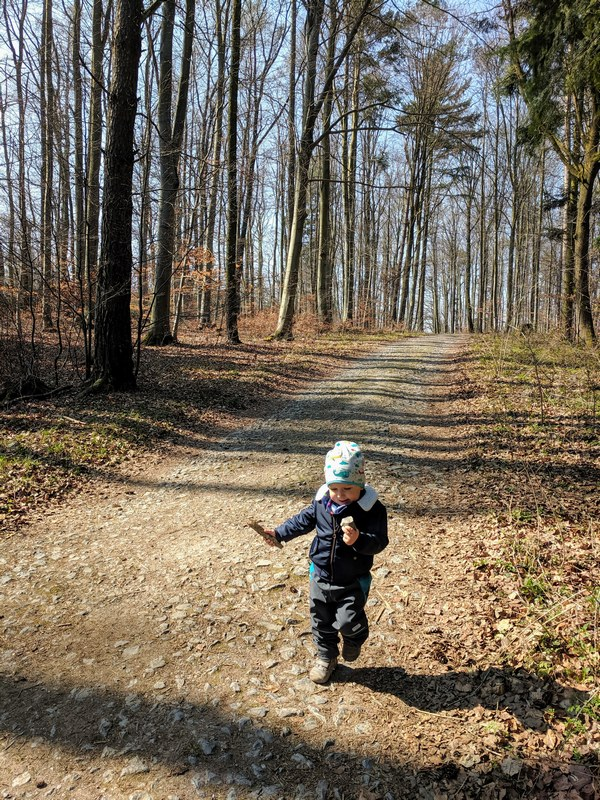
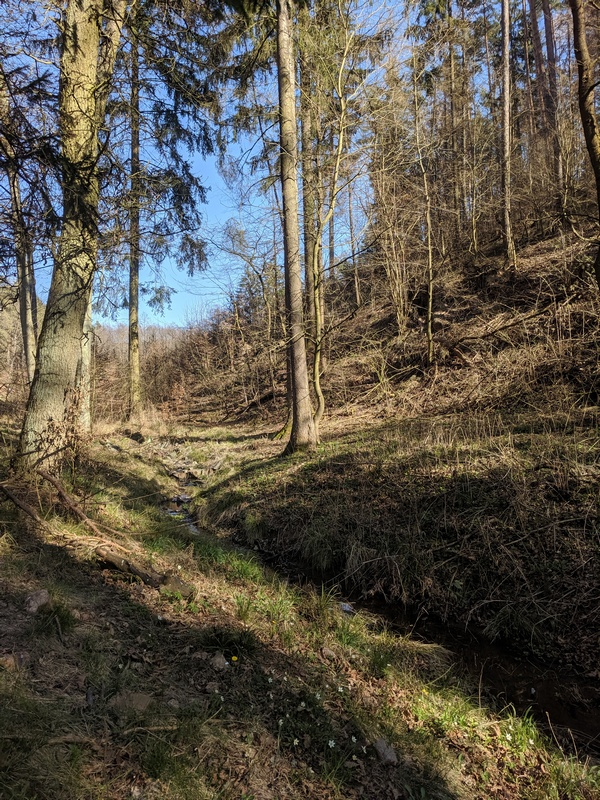
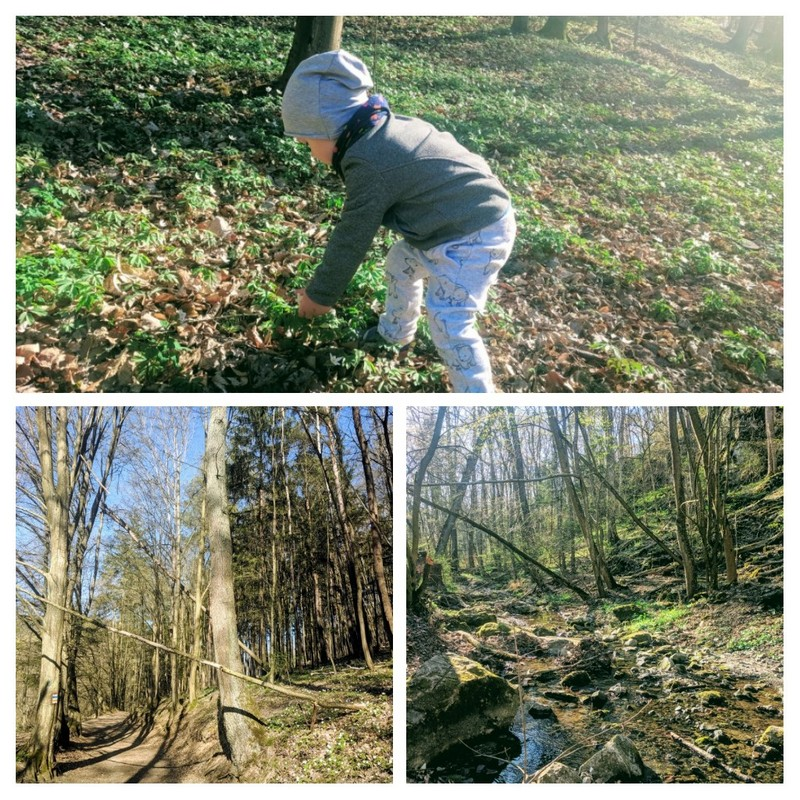
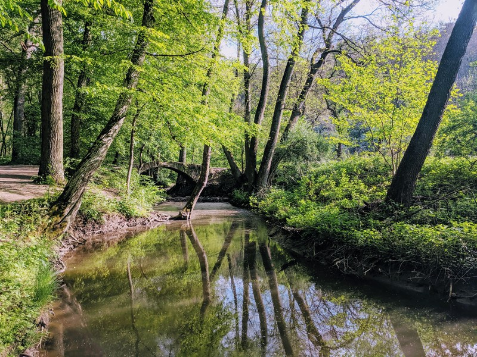

Tolik jsem se těšila, až zase začne výletní sezona a my budeme s Olim vyrážet někam do přírody a poznávat nová místa! A pak přišla karanténa a naše každodenní procházky se smrskly na les, co máme za barákem. Díkybohu za něj! Ale o to víc jsem vyhlížela každý víkend, kdy jsme sbalili batůžky, svačiny, vzali auto a vyrazili pryč z města. Ideálně tam, kde člověk nepotká živou duši, kde jsme mohli sundat roušky a z plných plic se nadechnout jara. Proto dnes přináším shrnutí našich nejhezčích výletů “mimo civilizaci”…
Skatulova cesta
Pohodová půldenní procházka lesní cestou, která začíná na okraji Babic nad Svitavou, je ideální spíš pro sportovní kočárky, ale nakonec jsme ani my s našim Moonem neměli problém. Velký kus cesty Olí i ťapkal sám, házel kamínky, sbíral klacíky a zaujatě poslouchal, jak ťuká datel :-) Na Skatulově cestě jsme nepotkali za celou dobu téměř nikoho a zvuky jarem se probouzejícího lesa byly doslova balzám na duši. Až teprve na rozcestí, kde se Skatulova cesta střetává s okruhem Okolo Býčí skály, začal provoz zvolna houstnout. Tam jsme si u krmelce snědli svačinky a vydali se zpátky do Babic :-)

Údolí Rakoveckého potoka
Tato trasa byla už o poznání frekventovanější, ale zase vedla celou dobu podél vody (potoka Rakovce), což naše dítě, které aktuálně našlo zalíbení v házení kamínků, velmi ocenilo. Tentokrát jsme šli pěšky bez kočáru, čemuž jsme i museli přizpůsobit délku trasy. Vyrazili jsme z Ořešína, údajně nejmenší městské části, která byla k Brnu připojena v roce 1971. Po cestě jsme míjeli několik vodních tůní sloužících jako protipovodňová zařízení. Celá trasa, která končí v Mokré Hoře, má cca 3 km - my měli auto zaparkované v Ořešíně, takže jsme to u jedné z tůní pak otočili a šli opět stejnou cestou zpátky.

Kaprálův mlýn
Tuto procházku hodnotíme jako jeden z vůbec nejhezčích karanténových výletů. Kaprálův mlýn leží v malebném údolí potoka Říčky v nejjižní části Moravského krasu. Jedná se o původně vodní mlýn a zároveň skautskou základnu a středisko ekologické výchovy. K mlýnu se dostanete po asfaltce, která odbočuje z hlavní spojnice Brno – Ochoz asi 1 km před obcí. U silnice se dá bez problémů zaparkovat auto. Dolů do údolí k mlýnu je to také asi 1 km - ze silnice sem vede žlutá turistická značka. Celou cestu to je pěkně z kopečka, takže na zpáteční výšlap si připravte svaly ;-) Od mlýna jsme pak ještě pokračovali překrásnou krajinou k vývěru Říčky, kde se nachází malá jeskyně - a pak stejnou cestou zase zpátky.

Údolí říčky Bobravy
Dalším úžasným překvapením pro nás byl výlet na Bobravu. Bobrava je nevelká říčka o délce pouhých 35 km, která pramení na východním okraji Českomoravské vrchoviny poblíž dálničního odpočívadla Devět křížů. Autem jsme dojeli do Radostic, kde jsme zaparkovali a pěšky se vydali k Radostickému mlýnu a dále pokračovali po cyklostezce podél říčky až k našemu cíli, kterým byl Spálený mlýn a klenutý kamenný most, pocházející údajně z 18. století, který je nejznámějším symbolem bobravského údolí. Na toto krásné a klidné místo se určitě ještě někdy rádi vrátíme.

Zpětně si říkám, že jsme naše jarní víkendy využili opravdu na maximum (možná líp, než kdyby žádné karantény nebylo) a ty klidné procházky v přírodě bychom si měli ordinovat častěji. Co vy? Prozradíte v komentářích nějaká vaše “tajná” místa mimo civilizaci :-)?